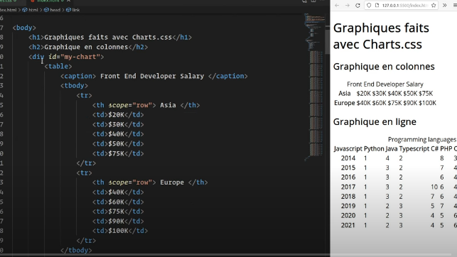
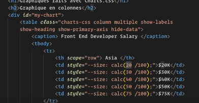
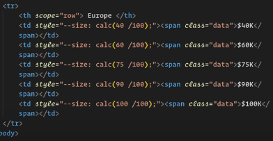
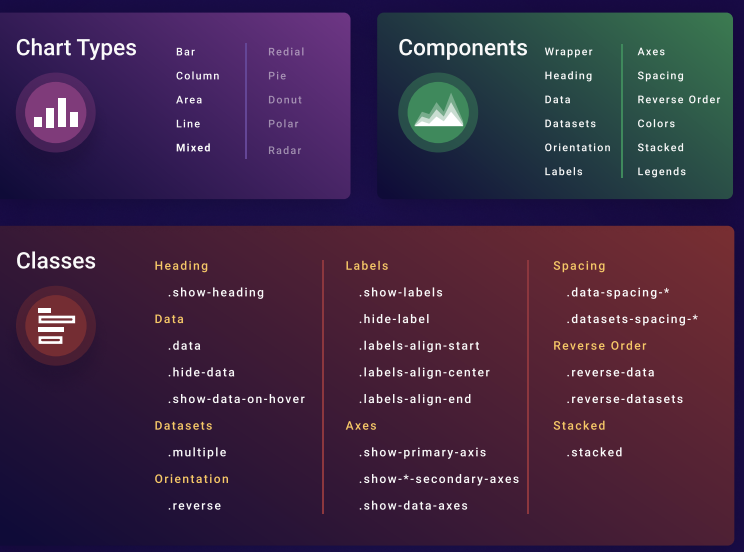
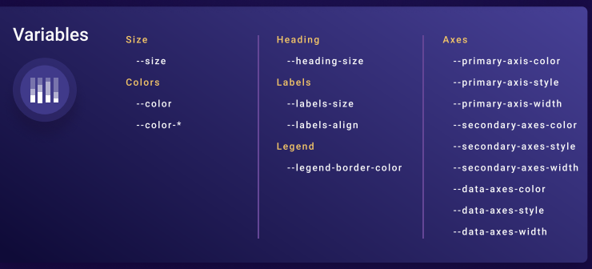

Lien du Tuto : utilisation de Charts.css
Lien pour accéder à l'outil
Créer son tableau
- table + caption (le titre) + tbody
- En premier on applique une class à la table charts-css

Mettre en forme le graphique
- Puis on peu ajouter des classes à la table en fonction de ce que l'on souhaite
-
Choix du type
- column :
- bar :
- line :
- multiple : chaque bar correspond à une ligne de mon tableau
- show-label : affichage des labels de chaque colonne
- show-heanding : affichage du titre
- show-primary-axis : mettre la ligne du bas
- hide-data : permet de ne pas voir les données
- ...

Associer la donnée aux éléments du graphique
Dans chaque case on peut lui ajouter l'information que c'est une donnée
En définissant un style. Par exemple la taille de la hauteur de la barre va correspondre à 20%.
On peut faire correspondre cela avec le chargement en base de données d'une information et la chargée en php
style="--size: calc( //__php $donnee_recuperee__// /100);">$//__php $donnee_recuperee __//K
On peut de meme indiquer que le 20K est une data
td__ style="--size: calc(20/100);" __span__ style="data"> $20K__/span__td__

Ajouter du css complémentaire pour alimenter le visuel
On peut nourrir notre chart avec du css
Voir toutes les composantes possibles du projet

